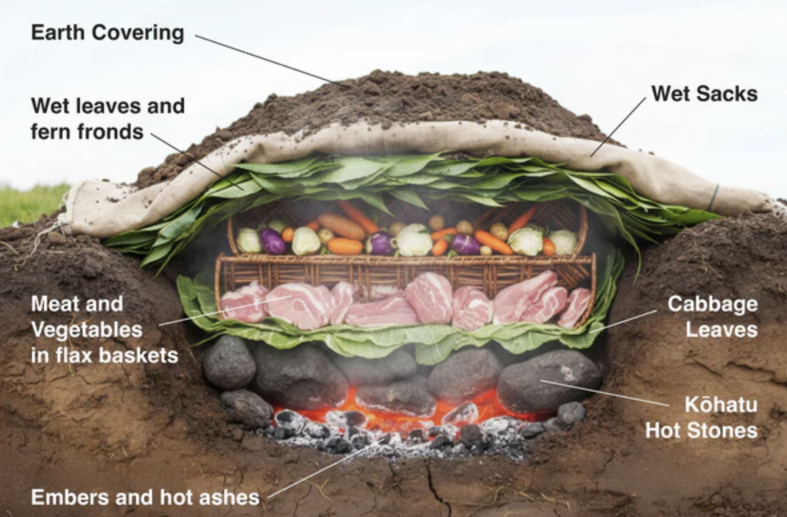

Multiplying Fractions
Year 9 · Two-lesson sequence · 7 worksheets
Karakia timatanga
Whakataka te hau ki te uru
Whakataka te hau ki te tonga
Kia mākinakina ki uta
Kia mātaratara ki tai
E hī ake ana te atakura
He tio, he huka, he hau hū
Tīhei mauri ora!
Cease the winds from the west
Cease the winds from the south
Let the breeze blow over the land
Let the breeze blow over the ocean
Let the red-tipped dawn come with a sharpened air
A touch of frost, a promise of a glorious day
Learning Objectives
By the end of this sequence you will be able to:
- Explore what it means to multiply fractions using diagrams and real-world reasoning.
- Calculate the product of two fractions using the rule: (a/b) × (c/d) = (a×c) / (b×d).
- Simplify fraction answers by identifying and cancelling common factors.
- Apply fraction multiplication to solve real-world problems and explain your answers.
- Explain fraction multiplication in algebraic terms and connect examples to the general rule.
Success Criteria — I can…
- Explain what ½ of ¾ means using a diagram or picture.
- Connect a fraction-of-a-fraction to a multiplication and justify why the answer is smaller than either fraction.
- Spot and explain an error in someone else’s fraction working.
- Record the general rule: (a/b) × (c/d) = ac/bd.
- Multiply two fractions together correctly and show all steps.
- Simplify my answer by cancelling common factors (or cross-cancelling).
- Explain what my answer means in a word problem.
- Use the rule (a/b) × (c/d) = ac/bd with numbers substituted in.
How to use these resources
Sheets 1–4 are for Lesson 1.
Sheets 5–7 are for
Lesson 2.
Lesson 1
The Hāngī Recipe Problem
Lesson 1 — Work in pairs. Read carefully, then explore the problem together.

The Scenario
Our whānau is preparing a hāngī for 24 people, but the recipe below is for 32 people. We need ¾ of every ingredient. The food is cooked in 2 umu (earth ovens), so the ingredients are split evenly between them (each umu gets half of what we prepared).
Key Question
What is ½ of ¾? Remember: of = × so this is the same as ½ × ¾
Your working space
Explain in words: how did you work this out? Why does your answer make sense?
Umu Challenge — How much goes in each umu?
Work out how much of each ingredient goes into each umu. First find ¾ of the full recipe, then halve it (multiply by ½).
Need a hint?
Whole numbers must be written as fractions first: 4 kg = 4/1, so (4/1) × (3/4) × (1/2) = 12/8 = ? Simplify by cancelling common factors.
| Ingredient | Full recipe | ¾ for 24 people | Each umu (× ½) |
|---|---|---|---|
| Pork shoulder | 6 kg | ||
| Kumara | 4 kg | ||
| Pumpkin | 3.5 kg | ||
| Chicken pieces | 5 kg | ||
| Water (for steam) | 8 L | ||
| Taro | 2.5 kg | ||
| Lamb shoulder | 5.5 kg | ||
| Puha (watercress) | 1 kg |
Show your full working for at least two ingredients:
A bigger hāngī might use 3 or 4 umu pits. Instead of halving the ¾ batch, you divide it equally between more pits.
- 3 umu: each pit gets ¾ × ⅓ of the full recipe
- 4 umu: each pit gets ¾ × ¼ of the full recipe
Calculate how much goes in each pit for these ingredients:
| Ingredient | Full recipe | ¾ batch | 3 umu (×⅓) | 4 umu (×¼) |
|---|---|---|---|---|
| Pork shoulder | 6 kg | 4.5 kg | ||
| Kumara | 4 kg | 3 kg | ||
| Water | 8 L | 6 L |
Think: For 3 umu, what single fraction of the full recipe does each pit receive? Simplify ¾ × ⅓. For 4 umu, simplify ¾ × ¼. What pattern do you notice?
Area Model Guide
Lesson 1 — Use this if you need a starting point for Sheet 1
A rectangle represents a whole. Shading shows fractions. Follow the steps below to find ½ of ¾.
Show ¾ of the rectangle
Divide into 4 equal columns. The first 3 columns are shaded — this shows ¾ of the whole.
Shaded = ¾ (3 out of 4 parts)
Find ½ of the shaded region
Divide into 4 columns × 2 rows. The top row of the first 3 columns is dark = ½ of ¾.
Dark = ½ of ¾ Light = the other half of ¾
Write the answer
Now try on your own — use these grids to shade other fractions from the task.
Fraction Bar
Lesson 1 — Another way to see fraction multiplication
How it works
The whole bar = 1. You build the multiplication in two steps:
- Step 1: Divide the bar into equal parts and click to shadeand shade your first fraction.
- Step 2: Set the subdivisions for your second fraction, then click within the shaded region to shade the result.Draw sub-divisions inside the shaded region. Shade your second fraction within it.
The dark cells show the answer. Count them out of the total.
Q1 Use the bar to find ⅔ × ¾
Need a hint?
For ⅔: divide into 3, shade 2. Then for ¾ — subdivide each part into 4 and shade 3 sub-parts in each shaded group.
Step 1: Shade ⅔ — 2 out of 3 sections
Step 2: Divide each section into 4 equal sub-parts. Shade ¾ of the shaded region.
Dark cells: _____ Total cells: _____ So ⅔ × ¾ =
Explore Does the order matter?
You just found ⅔ × ¾ by starting with 3 parts. Now try it the other way — start with 4 parts for ¾ first, then shade ⅔.
¾ × ⅔
Step 1: Shade ¾ — 3 out of 4 sections
Step 2: Divide each section into 3 equal sub-parts. Shade ⅔ of the shaded region.
Dark cells: _____ Total cells: _____ So ¾ × ⅔ =
What do you notice?
Q2 Choose your own fractions and explore
Set any two fractions and use the bar to find their product.
My fractions: ×
Step 1: Divide and shade your first fraction
Step 2: Subdivide and shade your second fraction within the shaded region
Dark cells: _____ Total cells: _____ Result: _____
Consolidation Task
Lesson 1 — Complete independently in the last 10 minutes
Show all working — the method matters as much as the answer.
Q1 Calculate: ½ × ¾
Need a hint?
Multiply the numerators together, then the denominators together.
Q2 Calculate: ⅔ × ¾. Simplify your answer fully.
Need a hint?
Multiply numerators together, then denominators. Your answer may simplify — look for a common factor in the top and bottom.
Q3 A garden bed is 6 m long. Your whānau plants vegetables in ⅔ of it. How long is the vegetable section?
Need a hint?
Write 6 as a fraction first: 6 = 6/1. Then multiply (6/1) × (⅔) and simplify. Don’t forget to include the units (m) in your answer.
Q4 A recipe calls for 3⁄5 cup of sugar. You want to make only ⅔ of the recipe. How much sugar do you need?
Need a hint?
What fraction of 3⁄5 are you trying to find? Remember: of = ×
Q5 Spot the Error
Sam calculated ⅔ × ¾ like this:
(a) What mistake did Sam make?
(b) What is the correct answer? Show your working.
Q6 Aroha says: “When you multiply two fractions, the answer is always smaller than both fractions you started with.”
Do you agree? Explain your reasoning and use an example to support your answer.
Need a hint?
Try ½ × ½. Is the answer smaller than ½? Now think about why — you are finding a fraction of something less than 1.
An alternative method is to convert fractions to decimals first, multiply, then convert back. For ½ × ¾:
0.5 × 0.75 = 0.375
0.375 = 375 ÷ 1000 → divide top & bottom by 125 → 3/8
This is a valid method which gives exactly the same answer as Q1 above.
Ext (a) Try the decimal method on ⅔ × ¾. Convert both fractions to decimals, multiply, then write the result as a fraction in simplest form.
Need a hint?
⅔ ≈ 0.667 is messy — use 0.6̅ (0.666…) or keep it exact as a fraction to start. The decimal method works cleanest when fractions convert to terminating decimals.
Ext (b) Connect the methods
0.5 is really 5⁄10 and 0.75 is really 75⁄100. Using the fraction algorithm: 5⁄10 × 75⁄100 = 375⁄1000. Simplify this and compare to your Q1 answer.
What does this tell you about why the decimal method always gives the same result as the fraction algorithm?
Confidence Check
Lesson 2
Lesson 2 Starter — What Fraction is Shaded?
Look at each diagram. Write the fraction that is shaded and the multiplication it represents.
Diagram 1 — 3 equal parts
Diagram 2 — 8 equal parts (4 columns × 2 rows)
Diagram 3 — trickier! (3 columns × 4 rows) — connect to Lesson 1
Light = ¾ of the whole Dark = ½ of ¾
Discuss with your partner
How does each diagram connect to Lesson 1? Where do you see the numerators and denominators?
Practice Sheet A
Lesson 2 — Q1–2: complete with your kaiako · Q3–8: work independently
Support — Worked Example Reference Strip
Find: 2/5 × 3/4
2 × 3 = 6
5 × 4 = 20
GCF(6, 20) = 2 → 6÷2 / 20÷2 = 3/10
Use this as a guide — show your own working below, don’t just copy.
Q1 Calculate: ½ × ¼
Need a hint?
Multiply straight across: numerator × numerator, denominator × denominator.
Q2 Calculate: ⅔ × ¾
Need a hint?
Try cancelling a common factor first — can you simplify before multiplying?
Q3 Calculate: ¾ × 5/6
Q4 Calculate: 4/7 × 7/8
Need a hint?
Spot a common factor — cross-cancel before multiplying.
Q5 Calculate: 3/4 × 8/9. Write in simplest form.
Q6 A jug holds ¾ L of juice. You drink ⅔ of it. How much did you drink?
Need a hint?
Write the multiplication first (of = ×), then solve.
Q7 A garden bed is ⅔ m wide and 5/4 m long. What is its area? (Area = length × width)
Q8 Spot the Error — Extension
Tama calculated ¾ × ⅖ like this:
Find the error, give the correct answer, and show working.
Practice Sheet B — Formative Assessment
Lesson 2 — Complete independently. Your kaiako will return written feedback.
Q1 Calculate: ⅔ × 5/9. Write in simplest form.
Q2 Calculate: 7/8 × 4/5. Try cross-cancelling before you multiply.
Q3 A piece of ribbon is ⅚ m long. You use ¾ of it. How long is the piece you used?
Need a hint?
Show working and write a sentence explaining your answer.
Q4 If a = 3, b = 4, c = 2, d = 5 — calculate (a/b) × (c/d) and simplify.
Need a hint?
Substitute the values in, then multiply and simplify.
Q5 Creative Challenge
Write your own word problem that requires calculating ¾ × ⅖. Describe a real situation. Then solve it.
Your problem:
Solve it:
Self-Assessment Checklist
Tick each box honestly — this helps your kaiako give you useful feedback.
Karakia whakamutunga
Kia hora te marino
Kia whakapapa pounamu te moana
Kia tere te karohirohi
I mua i to huarahi.
May peace be widespread
May the sea glisten like greenstone
May the shimmer of light
Guide you on your way.